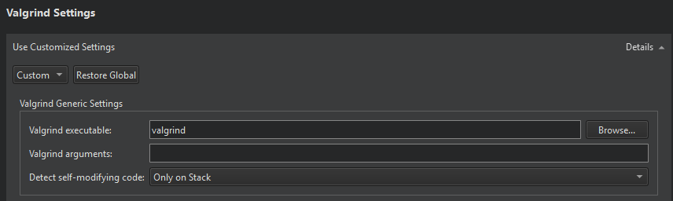

Specify Valgrind settings for a project
To specify settings for running applications on the Run device that you select for a kit, go to Projects > Run Settings.
With Valgrind's Tool Suite, you can detect memory leaks and profile function execution.
To specify Valgrind settings for the current project:
- In the Valgrind Settings section, select Custom.
- Specify Valgrind settings for the project.

- In Valgrind executable, specify the path to the Valgrind executable.
- In Valgrind arguments, specify additional arguments for Valgrind.
- In Detect self-modifying code, select whether to detect self-modifying code and where to detect it: only on stack, everywhere, or everywhere except in file-backend mappings.
Select Restore Global to revert to the global settings.
To specify global Valgrind settings, select Preferences > Analyzer.
See also Detect memory leaks with Memcheck, Profile function execution, Run Valgrind tools on external applications, Configuring Projects, Valgrind Callgrind, and Valgrind Memcheck.